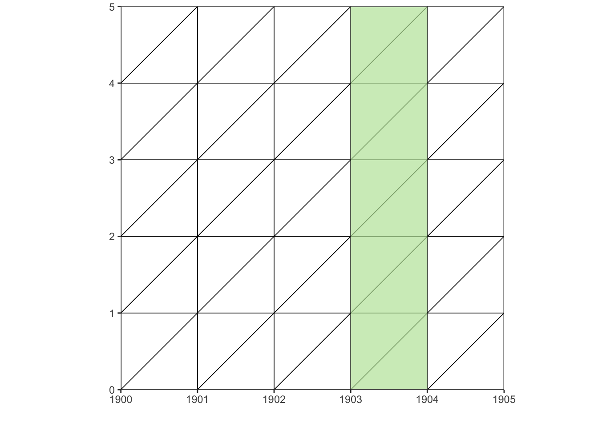

library(LexisPlotR)Práctica 4: Parte 2 (Diagramas de Lexis)
1 Crear diagramas de Lexis
Para facilitar la elaboración de diagramas de Lexis en R se recomienda el uso del paquete R: “LexisPlotR”. Este paquete se basa en el paquete “ggplot2”, por tanto, podrían añadirse nuevas capas o características, con todas las posibilidades que admite “ggplot2”.
Este paquete se puede instalar como cualquier otro paquete R. Una vez instalado, podría usarse con tan solo cargarlo.
Veamos algunos ejemplos de lo que se puede representar con este paquete extraídas de la página en Github de este paquete. El código usado en los siguientes ejemplos son autoexplicativos.
1.1 Ejemplo: lexis_grid()
Con la función lexis_grid() se representa un diagrama de Lexis desde el año 2000 a 2005, representando las edades desde 0 a 5.
#lexis.grid(year.start = 2000, year.end = 2005, age.start = 0, age.end = 5)
lexis_grid(year_start = 2000, year_end = 2005,
age_start = 0, age_end = 5)1.1.1 Ejemplo adicional
lexis_grid(year_start = 1900, year_end = 1950, age_start = 0,
age_end = 50, delta = 5)1.2 Ejemplo: lexis_age()
lexis <- lexis_grid(year_start = 1900, year_end = 1905,
age_start = 0, age_end = 5)
lexis_age(lg = lexis, age = 2)
1.3 Ejemplo: lexis_year()
lexis <- lexis_grid(year_start = 1900, year_end = 1905,
age_start = 0, age_end = 5)
lexis_year(lg = lexis, year = 1903)
1.4 Ejemplo: lexis_cohort()
lexis <- lexis_grid(year_start = 1900, year_end = 1905,
age_start = 0, age_end = 5)
lexis_cohort(lg = lexis, cohort = 1898)1.5 Ejemplo: lexis_polygon()
lexis <- lexis_grid(year_start = 1900, year_end = 1905,
age_start = 0, age_end = 5)
polygons <- data.frame(group = c(1, 1, 1, 2, 2, 2),
x = c("1901-01-01", "1902-01-01",
"1902-01-01", "1903-01-01",
"1904-01-01", "1904-01-01"),
y = c(1, 1, 2, 1, 1, 2))
lexis_polygon(lg = lexis, x = polygons$x, y = polygons$y,
group = polygons$group)1.6 Ejemplo: lexis_lifeline()
lg <- lexis_grid(year_start = 1900, year_end = 1905, age_start = 0,
age_end = 5)
lexis_lifeline(lg = lg, birth = "1901-09-23", lwd = 1.5)1.6.1 Ejemplo adicional 1
lexis_lifeline(lg = lg, birth = "1901-09-23", entry = "1902-04-01",
lwd = 1.5)1.6.2 Ejemplo adicional 2
lexis_lifeline(lg = lg, birth = "1901-09-23", entry = "1902-04-01",
exit = "1904-10-31", lwd = 1.5)1.7 Ejemplo con operador “tubería”
Se puede utilizar con el operador de “tubería” del paquete “magrittr” (incluido en tidyverse) y “sumar” elementos del paquete ggplot2.
library(magrittr)
library(ggplot2)
p <- lexis_grid(year_start = 1990, year_end = 2000,
age_start = 0, age_end = 10) %>%
lexis_age(age = 3) %>%
lexis_cohort(cohort = 1988) %>%
lexis_year(year = 1998) %>%
lexis_lifeline(birth = "1991-09-23", lwd = 1.5)
p <- p + labs(x = "Año", y = "Edad", "title" = "LexisPlotR")
p1.8 Referencias
A continuación se facilitan algunos enlaces útiles sobre este paquete: